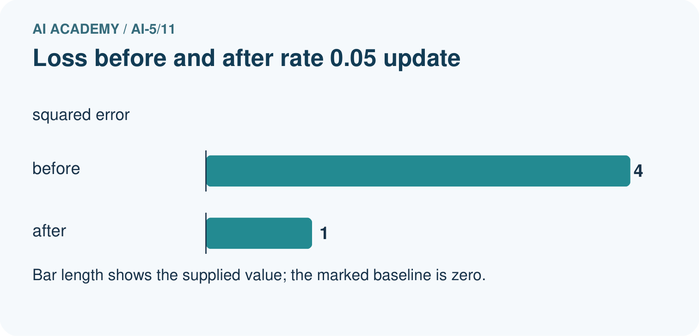
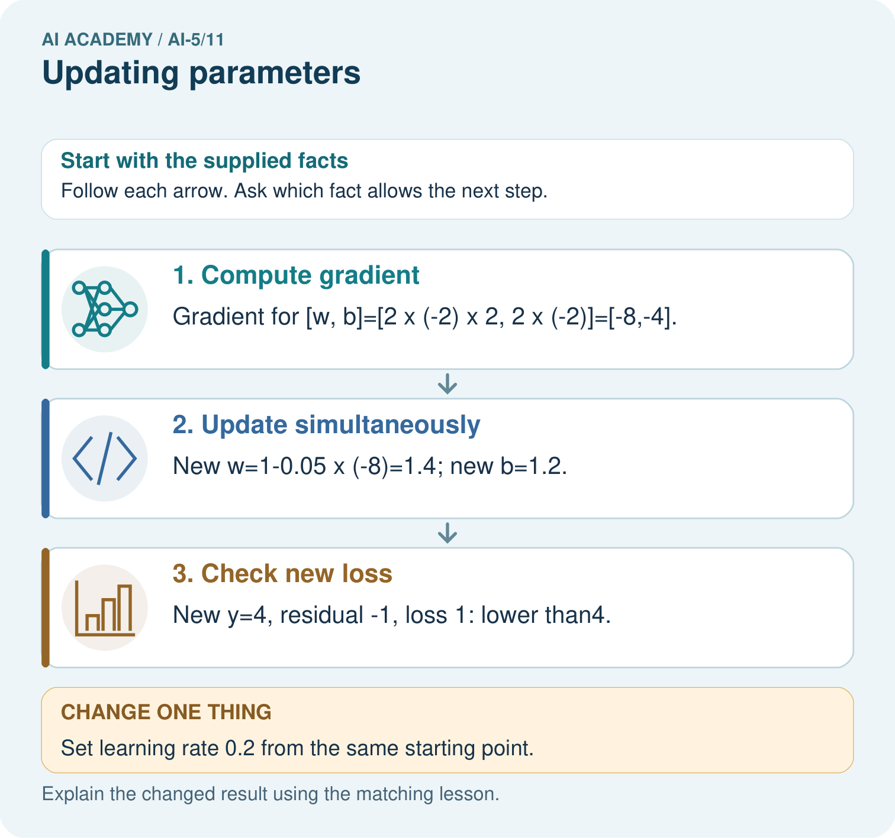

AI Academy · Level 5 · Grade 10 · Week 11 · Workbook
Updating parameters
Learn to understand, design, build, test and explain AI systems responsibly.
Project: Image-pattern Network Investigation
Workbook · 1 of 14
Recall and choose your starting point
Try the recall before opening notes. Then use a different colour or a labelled second line to correct your explanation.
Gradients with a numerical check
Without opening the old lesson, explain one key idea from Gradients with a numerical check. Give an example and a mistake that the idea helps you avoid.
Loss functions
Without opening the old lesson, explain one key idea from Loss functions. Give an example and a mistake that the idea helps you avoid.
Composing layers
Without opening the old lesson, explain one key idea from Composing layers. Give an example and a mistake that the idea helps you avoid.
Workbook · 2 of 14
Practise with fading help
Use W2: Detect overshooting for Updating parameters. Record the answer once; the lesson and workbook refer to the same attempt.
| Given inputs | Procedure I chose | Middle steps | Result and check |
|---|---|---|---|
Workbook · 3 of 14
Individual reasoning check
Use the worked case for Updating parameters. Proposed explanation: “Subtracting a negative gradient decreases the parameter”. Decide whether this explanation is supported. Point to the step or supplied fact that decides; explain your repair if needed.
Workbook · 4 of 14
Independent transfer case
Independent case: Update a new model independently
Use x = 1, target 4, w = 1, b = 1, squared loss and learning rate 0.1. Compute prediction, residual, gradient [2 times residual times x, 2 times residual], new parameters and new loss.
Attempt this case before feedback. Record any help. Earlier examples below are further practice; a case already practised with feedback cannot establish fresh transfer.
Workbook · 5 of 14
W1 Apply a negative gradient
Starting with parameter a = 2, gradient -3 and learning rate 0.2, calculate the new a.
Workbook · 6 of 14
W2 Detect overshooting
For the lesson start [1, 0], apply rate 0.3 and calculate prediction and loss.
Workbook · 7 of 14
W3 Preserve one snapshot
Explain why recomputing the bias gradient after changing w is not the simultaneous update specified here.
Workbook · 8 of 14
W4 Update a new model independently
Use x = 1, target 4, w = 1, b = 1, squared loss and learning rate 0.1. Compute prediction, residual, gradient [2 times residual times x, 2 times residual], new parameters and new loss.
Workbook · 9 of 14
W5 Evaluate a zero gradient
At a point with gradient [0, 0], what does this update do? Does that alone prove a global minimum on any loss surface?
Workbook · 10 of 14
Project checkpoint and reflection
Add a labelled updating parameters evidence sheet to Image-pattern Network Investigation. Show how you can apply a learning rate to an ordered gradient. Use the supplied fictional case and keep its inputs, intermediate steps, calculation or prediction, and limitation. Connect this record to last week’s record; a matching answer without a trace is insufficient.
Workbook · 11 of 14
Feedback, return check and learning record
| Evidence | My record |
|---|---|
| Worked alone / hint / model | |
| First step I repaired and why | |
| New case checked later; date and result | |
| What I can now explain without notes | |
| One remaining question |
Revisit this idea with your teacher after a delay. Familiarity is different from explaining and using it on a changed case.
Workbook · 12 of 14
Pictorial case practice: Updating parameters
Use one explicit gradient update and then recompute the loss.
Model y=2w+b, target 5. Start w=1, b=1; learning rate 0.05. Initial y=3, error y−target=−2, squared loss 4.
All inputs and outcomes in this worked example are invented classroom data; no real model run is claimed.


Why must new loss be recomputed rather than assumed smaller? Point to the relevant step in the picture, then write the changed result and the rule or evidence that supports it.
Support used: alone / hint / worked example. This record is practice evidence.
Project connection: For your Image-pattern Network Investigation, save the input, procedure, observed result and limitation of this check. Label this worked example as practice; use a different, previously unreviewed case when checking independent understanding.
Workbook · 13 of 14
Project portfolio milestone
Project: Image-pattern Network Investigation
Current milestone: Make a transparent first version. Keep a trace of how one input becomes an output; explain the rule or learned component.
For your Image-pattern Network Investigation, save the input, procedure, observed result and limitation of this check. Label this worked example as practice; use a different, previously unreviewed case when checking independent understanding.
| Evidence to keep | My record |
|---|---|
| This week’s input and deciding step | |
| Prediction and actual result (or labelled paper trace) | |
| One change since the previous checkpoint and why | |
| One error or limit and the next test |
Workbook · 14 of 14
Supported practice and learning evidence
Use this supported practice once, in the browser or on paper. Keep the reserved independent assessment for a separate first attempt before teacher feedback.
Use one explicit gradient update and then recompute the loss.
Practice 1: explain the deciding evidence
Which labelled step matches this detail? New y=4, residual -1, loss 1: lower than4.
1. Check new loss
2. Compute gradient
3. Update simultaneously
Hint if needed: Read the steps in the pictorial case. Match the supplied detail to the stage that performs or records it.
After your attempt, compare with the supported explanation: Check new loss New y=4, residual -1, loss 1: lower than4. Gradient descent subtracts learning rate times gradient. A negative gradient makes this subtraction increase the parameter. Compute both gradients at the original [w,b] before updating either one. The small step brings the prediction closer to five, reducing squared error. A larger step can cross the target and undo that gain, so the new prediction and loss must be recalculated.
Practice 2: explain the deciding evidence
Changed-case practice: Set learning rate 0.2 from the same starting point. Which conclusion is supported by the supplied facts?
1. This one example guarantees correct results for every future input.
2. New w=2.6, b=1.8, y=7, squared loss 4: no improvement.
3. We can decide the result without examining the changed input or the procedure.
Hint if needed: Use the changed condition and the deciding step in the pictorial trace. The answer must say what follows from those facts.
After your attempt, compare with the supported explanation: New w=2.6, b=1.8, y=7, squared loss 4: no improvement. The larger update jumps to an equally distant point on the opposite side of the target.
Repair a missing building block
Review Gradients with a numerical check (ai-5/10). Goal: Estimate one partial derivative while other parameters stay fixed. Short practice: Why should the numerical checks perturb one coordinate at a time? Point to the relevant step in the picture, then write the changed result and the rule or evidence that supports it.. Return to this week and explain what you changed.
Review Loss functions (ai-5/8). Goal: Calculate per-example squared error and mean squared error. Short practice: Why must the report name the chosen loss? Point to the relevant step in the picture, then write the changed result and the rule or evidence that supports it.. Return to this week and explain what you changed.
Review Composing layers (ai-5/5). Goal: Trace how one layer supplies the next layer inputs. Short practice: What intermediate value explains the changed output? Point to the relevant step in the picture, then write the changed result and the rule or evidence that supports it.. Return to this week and explain what you changed.
Predict, run and debug
The browser lab lets you edit the supported Python examples already included in this lesson. Predict first, run, inspect the actual output or error, change one input, then run again. Keep code, predictions, actual results and a reasoned revision together. On paper, label your result as a trace rather than an execution.
Keep your completed work
Use Download completed work in the hosted lesson to export your answers, reflections, practice feedback and code-run evidence. Open the HTML copy to read or print it. Drafts stay in this browser when storage is available; clear drafts on a shared device.